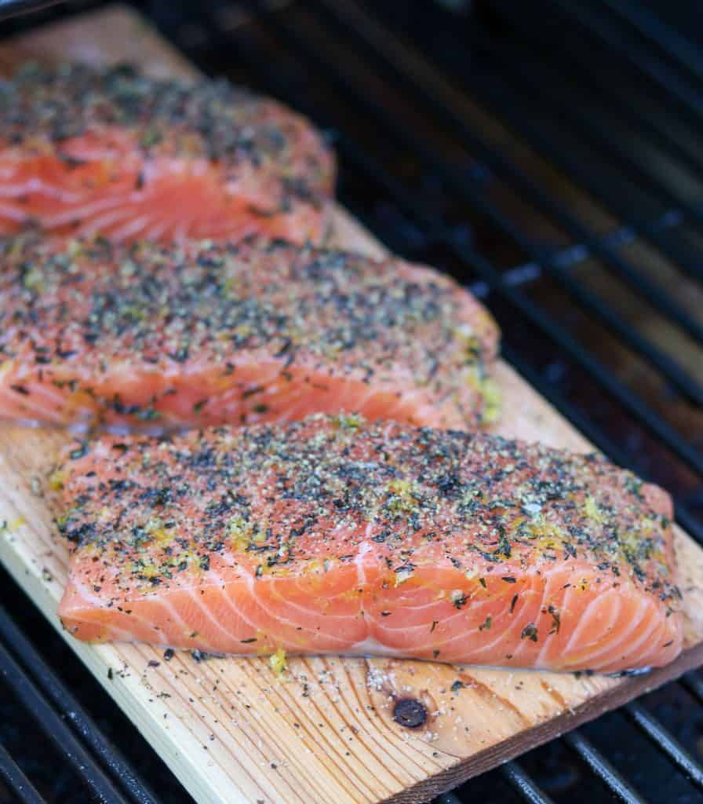

Easy Grilled Cedar Plank Salmon with Creamy Horseradish Sauce

Ingredients
For the Salmon
- 1 tablespoon finely grated lemon zes
- 2 teaspoons chopped fresh thyme
- ½ teaspoon sugar
- Coarse salt and freshly ground pepper
- 4 6- ounce skin-on salmon filets
- 2 tablespoon extra-virgin olive oil
For the Creamy Horseradish Sauce
- ½ cup creme fraiche
- 3 tablespoons chopped fresh chives
- 2 tablespoons prepared horseradish
- Coarse salt and freshly ground pepper
Special Equipment Needed
- Cedar plank designed for grilling
Instructions
- Place the cedar plank (one large enough to hold all 4 salmon filets) in cold water and soak for at least an hour.
- Preheat the grill to medium. Combine lemon zest, thyme and sugar in a small bowl. Place the salmon filets on the cedar plank and brush with olive oil. Rub the lemon-thyme mixture over the surface of salmon filets. Season the filets with salt and pepper.
- Preheat the grill to medium. Combine lemon zest, thyme and sugar in a small bowl. Place the salmon filets on the cedar plank and brush with olive oil. Rub the lemon-thyme mixture over the surface of salmon filets. Season the filets with salt and pepper.
- Meanwhile, make the sauce. Combine all ingredients in a small bowl and season to taste with salt and pepper. Set aside.
- Carefully remove the cedar plank from the grill. Lift the filets off of the cedar plank using a thin metal spatula, leaving the skin behind on the plank. Serve immediately with the Creamy Horseradish Sauce.